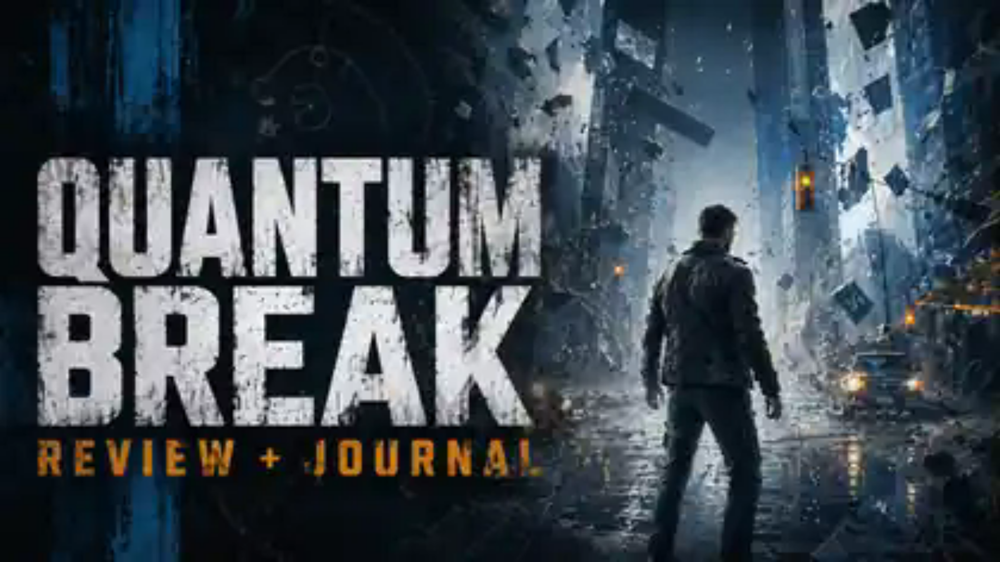

Steam CompletionsDraft shellPhoto evidence ready
Quantum Break
Replay-ready Remedy sci-fi review scaffold with old-PC readiness checks, adversarial bias tests, and a separate illustrated journey for live narration.
Time fractureThird-person actionNarrative sci-fiPending score
State Live draftGate 4 checks openNext Images pending
LOCKEDDraft4 gates open